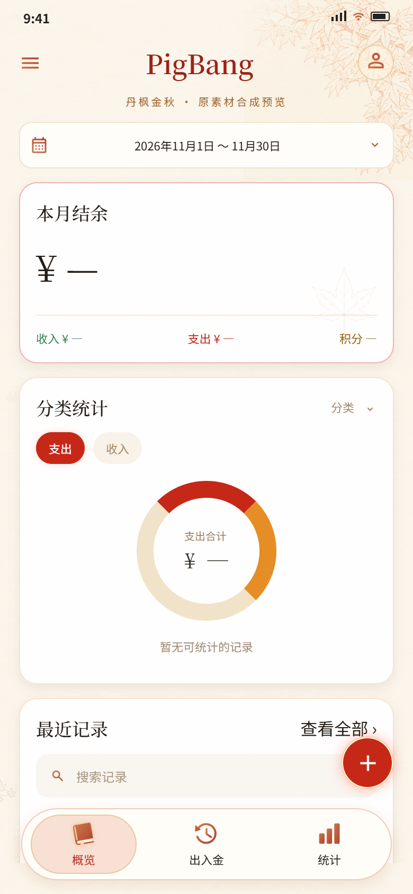
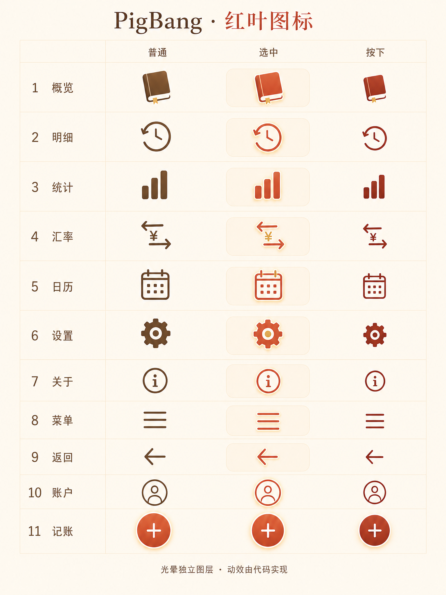
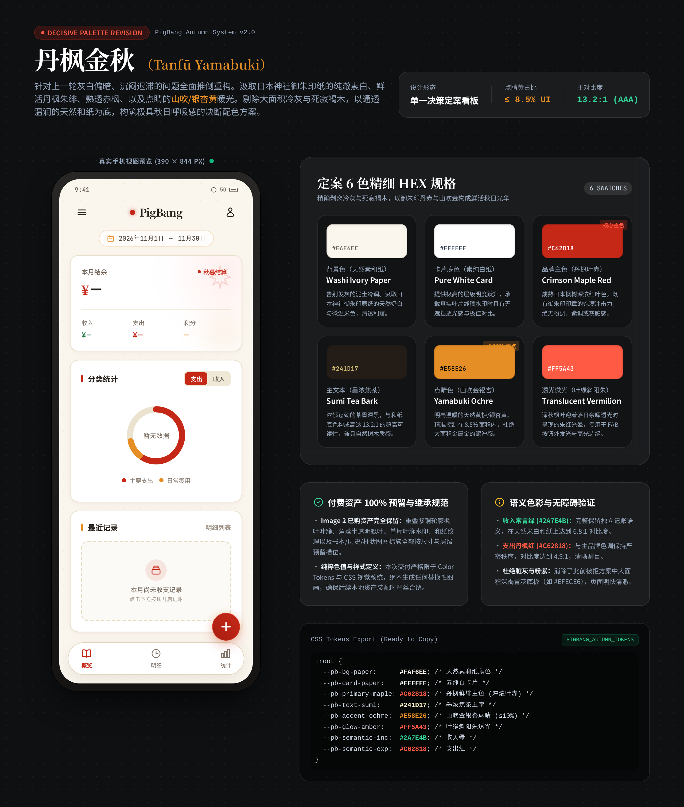

原素材合成首页
静态布局预览，尚未接入App。叶丛仍是low浅底稿，用混合模式模拟透明。

Stitch只确定色值与组件色彩。原图不覆盖；本地预览复用已有纸纹、Image 2叶丛、单片叶水印和现有导航SVG。图标三态高画质原稿继续作为后续制作参考。
重要素材与采用状态 · 全部图像校验清单 · Stitch原始配色设计
静态布局预览，尚未接入App。叶丛仍是low浅底稿，用混合模式模拟透明。

11个图标三态文件完好；本轮未重新生成或覆盖，尚未拆成独立图标。


Stitch返回的对比度/面积比例为其生成说明，未作为本轮验证结论。建议扩展为导出色值、微调山吹黄或查看有数据状态，本轮未追加执行。